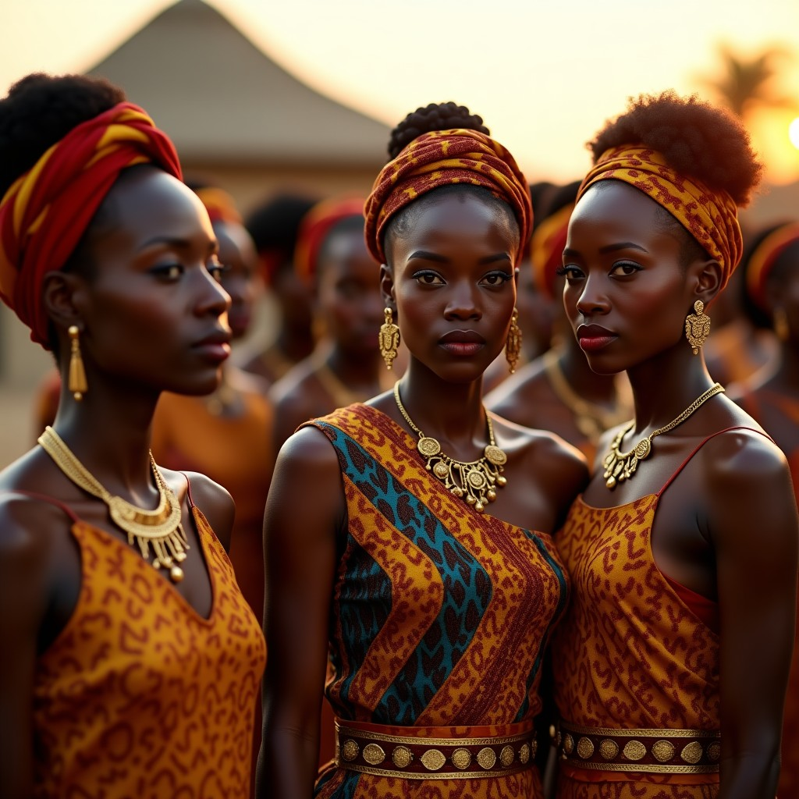

179KB · 6.1s · 1024x1024
70KB · 5.7s · 1024x1024
134KB · 5.7s · 1024x1024

213KB · 5.9s · 1024x1024
6KB · 5.0s · 1024x1024
# 1. Chat com tool definition
tools = [{
"type": "function",
"function": {
"name": "generate_image",
"description": "Generate an image",
"parameters": {
"type": "object",
"properties": {
"prompt": {"type": "string"},
"width": {"type": "integer", "default": 1024},
"height": {"type": "integer", "default": 1024},
"steps": {"type": "integer", "default": 25},
"seed": {"type": "integer", "default": 42}
},
"required": ["prompt"]
}
}
}]
# 2. User pergunta em linguagem natural
r = requests.post(
"https://integrate.api.nvidia.com/v1/chat/completions",
headers={"Authorization": f"Bearer {KEY}"},
json={
"model": "google/diffusiongemma-26b-a4b-it",
"messages": [
{"role":"user","content":"Gere uma imagem da Baia de Luanda"}
],
"tools": tools,
"tool_choice": "auto"
}
)
# Resposta: tool_calls[0].function.arguments = '{"prompt":"..."}'
# 3. Executa image gen
r_img = requests.post(
"https://ai.api.nvidia.com/v1/genai/black-forest-labs/flux.1-dev",
headers={"Authorization": f"Bearer {KEY}"},
json={
"prompt": args['prompt'],
"mode": "base",
"cfg_scale": 3.5,
"width": 1024,
"height": 1024,
"seed": 42,
"steps": 25
}
)
img = base64.b64decode(r_img.json()['artifacts'][0]['base64'])